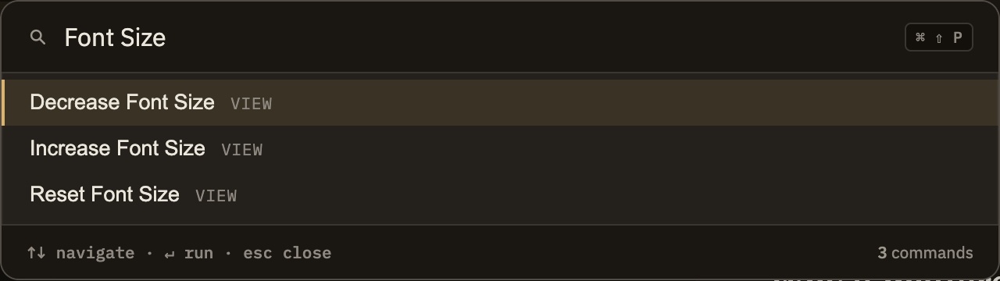

Docs/Viewing options/Font size & zoom
Font size & zoom
Minerva gives you two ways to make things bigger or smaller, and they do different jobs. Editor font size changes only the text you're writing in. Zoom scales the whole window at once — sidebars, menus, dialogs, and your writing together. Reach for whichever fits: bump the editor text when you just want more comfortable writing, or zoom the window when everything feels too small.
The two controls
Editor font size
Changes only the size of the text in the editor — the rest of the window stays put. Press ⌘⇧= / CtrlShift= to make it larger and ⌘⇧- / CtrlShift- to make it smaller, a step at a time. You'll also find these under View, along with a command to reset to the default size. Your choice is remembered the next time you open Minerva.
Zoom
Scales everything in the window together, not just the editor. Press ⌘+ / Ctrl+ to zoom in, ⌘- / Ctrl- to zoom out, and ⌘0 / Ctrl0 to return to normal size. The same commands live under View.

The two stack together
Because zoom scales the whole window, it also scales whatever editor text size you've set. If you've already made the editor text larger and then zoom in as well, the text grows twice. If things look bigger than expected, check both controls — neither one resets the other.